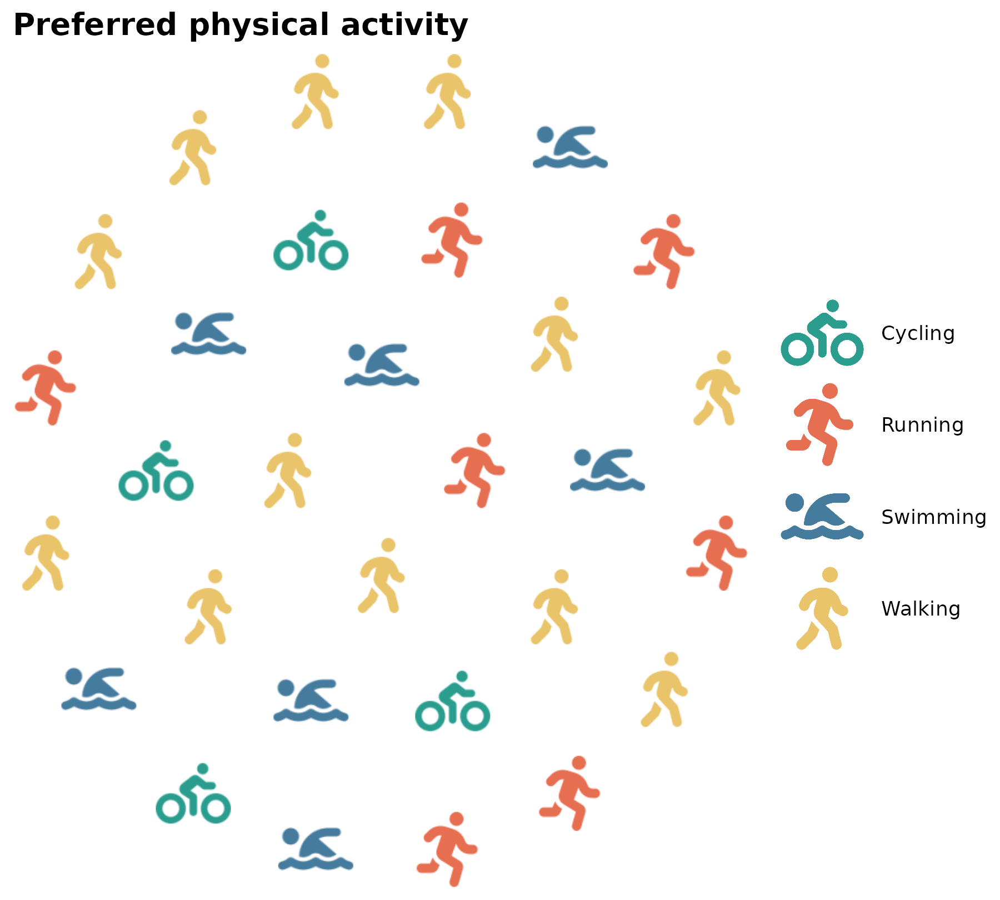
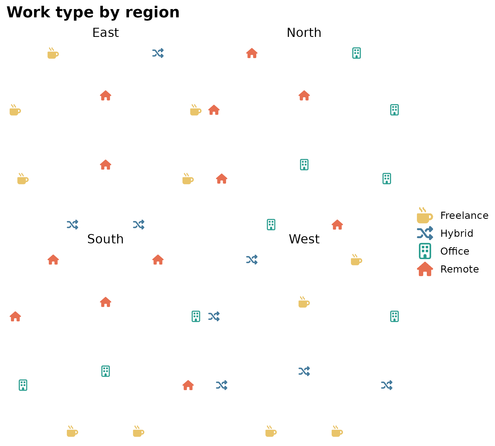
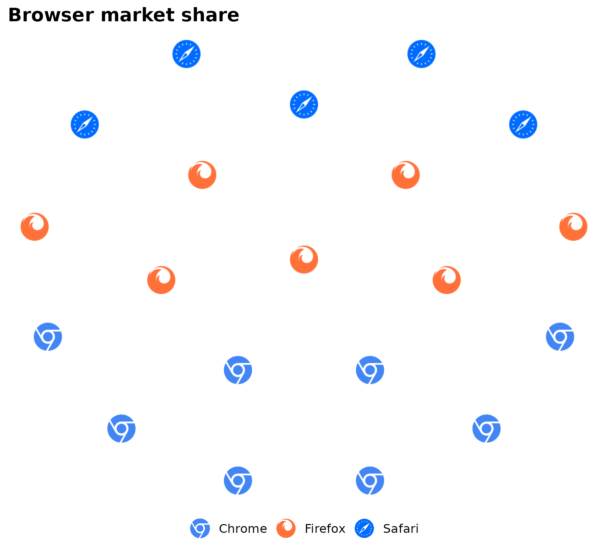

geom_pop() draws icon-based population grids. Add an
icon column to your data, then map icon and
color in aes(). Do not map x or
y – layout is computed internally.
Basic usage
df_raw <- data.frame(
activity = c("Running", "Cycling", "Swimming", "Walking"),
n = c(28, 22, 18, 32)
)
df_plot <- process_data(
data = df_raw,
group_var = activity,
sum_var = n,
sample_size = 30
) %>%
mutate(icon = case_when(
type == "Running" ~ "person-running",
type == "Cycling" ~ "person-biking",
type == "Swimming" ~ "person-swimming",
type == "Walking" ~ "person-walking"
))
ggplot() +
geom_pop(
data = df_plot,
aes(icon = icon, color = type),
size = 3, dpi = 72
) +
scale_color_manual(values = c(
Running = "#e76f51",
Cycling = "#2a9d8f",
Swimming = "#457b9d",
Walking = "#e9c46a"
)) +
theme_pop() +
scale_legend_icon(size = 7) +
labs(title = "Preferred physical activity", color = NULL)
Verify icon names with fa_icons(query = "biking") and
fa_icons(query = "swimming") as Font Awesome naming can
vary slightly by version.
Faceted chart
Use high_group_var for the facet panel variable and
group_var for the color/icon variable within each panel.
Icons from different groups scatter and mix across each panel by default
(arrange = FALSE).
df_raw <- data.frame(
region = c("North", "North", "North",
"South", "South", "South",
"East", "East", "East",
"West", "West", "West"),
work_type = c("Office", "Remote", "Hybrid",
"Office", "Remote", "Freelance",
"Remote", "Hybrid", "Freelance",
"Office", "Hybrid", "Freelance"),
n = c(40, 35, 25,
20, 45, 35,
50, 30, 20,
30, 40, 30)
)
df_plot <- process_data(
data = df_raw,
group_var = work_type,
sum_var = n,
sample_size = 10,
high_group_var = "region"
) %>%
mutate(icon = case_when(
type == "Office" ~ "building",
type == "Remote" ~ "house",
type == "Hybrid" ~ "shuffle",
type == "Freelance" ~ "mug-hot"
))
ggplot() +
geom_pop(
data = df_plot,
aes(icon = icon, color = type),
size = 2, dpi = 72, facet = group
) +
facet_wrap(~ group, ncol = 2) +
scale_color_manual(values = c(
Office = "#2a9d8f",
Remote = "#e76f51",
Hybrid = "#457b9d",
Freelance = "#e9c46a"
)) +
theme_pop() +
labs(title = "Work type by region", color = NULL)
Clustered layout
arrange = TRUE groups icons by category instead of
scattering them.
df_browser <- data.frame(
browser = c("Chrome", "Firefox", "Safari"),
n = c(45, 20, 25)
)
df_browser_plot <- process_data(
data = df_browser,
group_var = browser,
sum_var = n,
sample_size = 20
) %>%
mutate(icon = case_when(
type == "Chrome" ~ "chrome",
type == "Firefox" ~ "firefox",
type == "Safari" ~ "safari",
type == "Edge" ~ "edge"
))
ggplot() +
geom_pop(
data = df_browser_plot,
aes(icon = icon, color = type),
size = 2, dpi = 72, arrange = TRUE
) +
scale_color_manual(values = c(
Chrome = "#4285F4",
Firefox = "#FF7139",
Safari = "#006CFF",
Edge = "#0078D7"
)) +
theme_pop() +
theme(legend.position = "bottom") +
labs(title = "Browser market share", color = NULL)